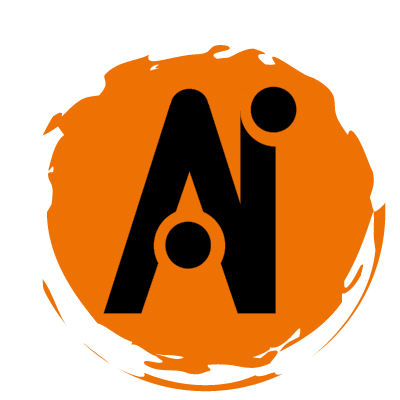

De l'image aux mots, des mots à l'image
Lancez une recherche ci-dessous pour afficher des propositions.
Le 1er critère fixe la priorité d'affichage (ex. : numération ; lsf ou lsf ; numération).
Chaque catalogue est téléchargé une seule fois, puis conservé sur l'appareil. Les recherches suivantes ne sollicitent plus le site d'ARASAAC et fonctionnent hors connexion.
| Langue | État | Poids | Dernière mise à jour |
|---|
Pictogrammes : ARASAAC — Auteur : Sergio Palao — Licence : CC BY-NC-SA (Gobierno de Aragón).